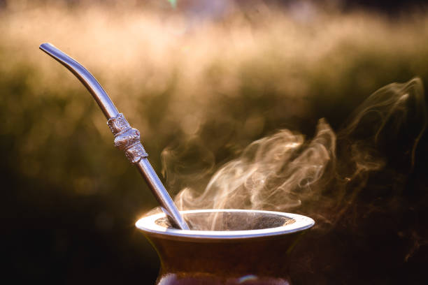
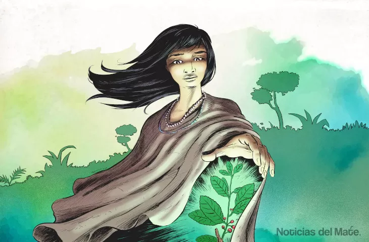

El origen del mate
¿Qué es el Mate?: es una bebida, una experiencia compartida, un símbolo de amistad! Originario de Misiones, el mate ha sido parte de nuestra cultura desde tiempos inmemoriales.
Argentina
"El mate está rodeado de numerosas leyendas y mitos que reflejan su importancia cultural. Una de las leyendas guaraníes más conocidas cuenta la historia de dos diosas, Yari y Araí que descendieron a la tierra y fueron acogidas por un anciano. Como agradecimiento, Yari convirtió una planta en yerba mate para que el anciano pudiera disfrutar de una bebida que le brindara fuerza y compañía. Otra historia popular es la del cazador guaraní que, tras salvar a una anciana en el bosque, recibió de ella la planta de yerba mate como recompensa. Estas leyendas no solo destacan el valor del mate como bebida, sino también su papel como símbolo de generosidad y amistad."
Cómo se Toma el Mate Misionero? "Preparar el mate es todo un ritual. Aquí te explicamos cómo hacerlo paso a paso:
- Elige la Yerba: Selecciona una buena yerba mate, preferiblemente de Misiones, para asegurar un sabor auténtico.
- Llena el Mate: Llena la calabaza (mate) hasta dos tercios con yerba.
- Inclina y Agita: Inclina el mate para que la yerba se acomode en un ángulo y agítalo para que los componentes más finos queden en la parte superior.
- Agua Tibia: Añade un poco de agua tibia (no caliente) en la parte baja para humedecer la yerba.
- Coloca la Bombilla: Inserta la bombilla en la parte húmeda.
- Agua Caliente: Añade agua caliente, pero no hirviendo, y disfruta del primer sorbo. Recuerda, el primer mate suele ser el más amargo.